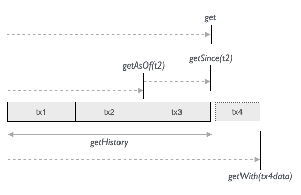

On this page we’ll quickly get an intuitive overview of how Molecule queries and transactions look like.
Then the following pages in the side menu will explain in more detail.
We’ll presume that we have set up an implicit connection to an in-memory Peer database:
import app.dsl.someDomain._
import molecule.datomic.api._
import molecule.datomic.peer.facade.Datomic_Peer
implicit val conn = recreateDbFrom(SomeSchema)
We use the builder pattern to compose molecules of attributes and get back typed tuples of data that matches our molecule by calling get on a molecule:
val names : List[String] = Person.name.get
val namesAndAges : List[(String, Int)] = Person.name.age.get
val namesAgesMembers: List[(String, Int, Boolean)] = Person.name.age.isMember.get
// etc..
In Datomic, data is not deleted but instead “retracted” since all changes are accumulated. That makes it possible to go back and see what data was retracted and is no longer current. That’s why we say “CRUD” instead of CRUD.
// Save populated molecule
Person.name("John").likes("pizza").age(24).save
// Insert multiple tuples of data using a molecule template
Person.name.age.likes insert List(
("John", 24, "pizza"),
("Lisa", 20, "sushi")
)
// Update one or more attributes of a given entity id
Person(johnId).age(25).likes("thai").update
// Retract ("delete") entity
johnId.retract
// Retract attribute value
Person(johnId).likes().update
All commands in Molecule can be synchronous or asynchronous:
// sync
val list: List[(String, Int)] = Person.name.age.get
// async
val listAsync: Future[List[(String, Int)]] = Person.name.age.getAsync
saveAsync
insertAsync
updateAsync
retractAsync
name here is a card-one attribute with a single value
Person.name.get.head === "Bob"
interests here is a card-many attribute with a Set of distinct values
Person.name.interests.get === List(
"Bob", Set("Baseball", "Origami"),
"Liz", Set("Painting", "Traveling", "Tae Kwondo")
)
Keyed card-many attributes, or “Map attributes”, are useful for i18n for instance
Phrases.greeting("en" -> "hello", "de" -> "hallo").save
Phrases.greeting("en" -> "hello").get.head === Map("en" -> "hello")
Phrases.greeting.k("de").get.head === Map("de" -> "hallo")
Attributes can be
$ appended), or_ appended) that is mandatory but not returned:// name is mandatory
// age$ is optional
// isMember_ is mandatory but not returned (tacit)
val membersWithOptionalAge: List[(String, Option[Int])] = Person.name.age$.isMember_.get
Cardinality one Cardinality many Mapped cardinality many
------------------- ------------------------- --------------------------------
oneString : String manyString : Set[String] mapString : Map[String, String]
oneInt : Int manyInt : Set[Int] mapInt : Map[String, Int]
oneLong : Long manyLong : Set[Long] mapLong : Map[String, Long]
oneFloat : Float manyFloat : Set[Float] mapFloat : Map[String, Float]
oneDouble : Double manyDouble : Set[Double] mapDouble : Map[String, Double]
oneBigInt : BigInt manyBigInt : Set[BigInt] mapBigInt : Map[String, BigInt]
oneBigDecimal: BigDecimal manyBigDecimal: Set[BigDecimal] mapBigDecimal: Map[String, BigDecimal]
oneBoolean : Boolean manyBoolean : Set[Boolean] mapBoolean : Map[String, Boolean]
oneDate : Date manyDate : Set[Date] mapDate : Map[String, Date]
oneUUID : UUID manyUUID : Set[UUID] mapUUID : Map[String, UUID]
oneURI : URI manyURI : Set[URI] mapURI : Map[String, URI]
oneEnum : String manyEnum : Set[String]
// equality
Person.age(42)
// negation
Person.age.not(42) // or
Person.age.!(42)
// comparison
Person.age.>(42)
Person.age.>=(42)
Person.age.<(42)
Person.age.<=(42)
// null
Person.age() // or
Person.age(Nil)
// Word search
Person.comment.contains("nice")
Person.age(count)
Person.age(countDistinct)
Person.age(distinct)
Person.age(max)
Person.age(min)
Person.age(rand)
Person.age(sample)
Person.age(avg)
Person.age(median)
Person.age(stddev)
Person.age(sum)
Person.age(variance)
OR
Person.age(42 or 43) // same as
Person.age(42, 43) // same as
Person.age(List(42, 43))
AND: card-many attribute category has both a “restaurants” and a “shopping” value:
Community.name.category_("restaurants" and "shopping").get === List("Ballard Gossip Girl")
“Input molecules” awaits 1, 2 or 3 input values. Useful for re-use
val personsOfAge = m(Person.name.age_(?))
personsOfAge(23).get === List("Bob")
personsOfAge(24).get === List("Liz", "Don")
2 inputs + logic (and relationships)
val typeAndRegion = m(Community.name.type_(?).Neighborhood.District.region_(?))
// Social media communities in southern districts
typeAndRegion(("twitter" or "facebook_page") and ("sw" or "s" or "se"))
Person.name.age.Address.street.get === List(
("Bob", 23, "5th Avenue")
)
// flat
Invoice.no.InvoiceLines.item.get === List(
(42, "coffee"),
(42, "sugar")
)
// nested
Invoice.no.InvoiceLines.*(InvoiceLine.item).get === List(
(42, List("coffee", "sugar"))
)
Relationship to the same Namespace type (Person -> Person)
Person.name.Spouse.name.get.head === ("Bob", "Liz")
Relationships can be defined to go in both directions so that we can traverse a graph uniformly:
Person.name.Knows.name.Knows.name.get === List(
("Bob", "Liz", "Dan"),
("Dan", "Liz", "Bob")
// etc...
)
Attributes from different Namespaces that are not explicitly related can be associated by sharing the same entity id. We call molecules with associative relationships “Composite molecules”:
m(Person.name("Bob") + Bar.status("regular")).save
m(Person.name + Bar.status).get.head === ("Bob", "regular")
Transaction bundles can atomically transact multiple operations/statements in one transaction:
transact(
// retract entity
e1.getRetractStmts,
// save new entity
Ns.int(4).getSaveStmts,
// insert multiple new entities
Ns.int.getInsertStmts(List(5, 6)),
// update entity
Ns(e2).int(20).getUpdateStmts
)
Add meta data to the transaction entity itself about the transaction:
Person.name("John").likes("pizza").Tx(Audit.user("Lisa").uc("survey")).save
We can then query for specific tx meta data
// How was John added?
// John was added by Lisa as part of a survey
Person(johnId).name.Tx(Audit.user.uc).get === List(("John", "Lisa", "survey"))
// When did Lisa survey John?
Person(johnId).name_.txInstant.Tx(Audit.user_("Lisa").uc_("survey")).get.head === dateX
// Who were surveyed?
Person.name.Tx(Audit.uc_("survey")).get === List("John")
// What did people that Lisa surveyed like?
Person.likes.Tx(Audit.user_("Lisa").uc_("survey")).get === List("pizza")
// etc..
Ensure transactional atomicity with tx functions that run within a single transaction. If any part of the function throws an exception, the whole transaction is aborted.
Here’s a money transfer function where we want to be sure that both accounts are updated correctly:
// Pass in entity ids of from/to accounts and the amount to be transferred
def transfer(from: Long, to: Long, amount: Int)(implicit conn: Conn): Seq[Seq[Statement]] = {
// Validate sufficient funds in from-account
val curFromBalance = Account(from).balance.get.headOption.getOrElse(0)
if (curFromBalance < amount)
throw new TxFnException(
s"Can't transfer $amount from account $from having a balance of only $curFromBalance.")
// Calculate new balances
val newFromBalance = curFromBalance - amount
val newToBalance = Account(to).balance.get.headOption.getOrElse(0) + amount
// Update accounts
Account(from).balance(newFromBalance).getUpdateStmts ++ Account(to).balance(newToBalance).getUpdateStmts
}
We then call the transaction function inside a transact method:
transact(transfer(fromAccount, toAccount, okAmount))
Datomic has powerful ways of accessing all the immutable data that accumulates over time in the database:

// Current data
Person.name.age.get
// As of some point in time - how did it look at that time?
Person.name.age.getAsOf(nov5date)
// Since some point in time - what has happened after this time?
Person.name.age.getSince(nov5date)
// History of all name operations - what names were added and retracted?
Person.name.getHistory
// Test what-if scenarios given some test statements - how will it look if we do x?
Person.name.getWith(someTestStmts)
Molecule provides access to Datomic’s various generic interfaces and apis.
touch an entity id to get all it’s attribute values
orderId.touch === Map(
":db/id" -> orderId,
":Order/lineItems" -> List(
Map(
":db/id" -> 102L,
":LineItem/qty" -> 3,
":LineItem/product" -> "Milk",
":LineItem/price" -> 12.0),
Map(
":db/id" -> 103L,
":LineItem/qty" -> 2,
":LineItem/product" -> "Coffee",
":LineItem/price" -> 46.0)))
Retrieve generic data about entities and attributes:
// Entity id of Ben with generic Datom attribute `e`
Person.e.name.get.head === (benEntityId, "Ben")
// When was the Ben's age last changed?
Person.age.txInstant.get.head === (24, <April 4>) // (Date)
// etc...
Attributes and values of entity e1
EAVT(e1).a.v.get === List(
(":Person/name", "Ben"),
(":Person/age", 25),
(":Golf/score", 5.7)
)
Values, entities and transactions where attribute :Person/age is involved
AVET(":Person/age").e.v.t.get === List(
(25, e1, t2),
(23, e2, t5)
(14, e3, t7),
)
// AVET index filtered with an attribute name and a range of values
AVET.range(":Person/age", Some(14), Some(24)).v.e.t.get === List(
(14, e4, t7),
(23, e2, t5)
)
Entities, values and transactions where attribute :Person/name is involved
AEVT(":Person/name").e.v.t.get === List(
(e1, "Ben", t2),
(e2, "Liz", t5)
)
Get entities pointing to entity a1
VAET(a1).v.a.e.get === List(
(a1, ":Release/artists", r1),
(a1, ":Release/artists", r2),
(a1, ":Release/artists", r3),
)
Data from transaction t1 until t4 (exclusive)
Log(Some(t1), Some(t4)).t.e.a.v.op.get === List(
(t1, e1, ":Person/name", "Ben", true),
(t1, e1, ":Person/age", 25, true),
(t2, e2, ":Person/name", "Liz", true),
(t2, e2, ":Person/age", 23, true),
(t3, e1, ":Person/age", 25, false),
(t3, e1, ":Person/age", 26, true)
)
Get information about the Datomic schema which is also a way to access your Data Model programatically.
Schema.part.ns.attr.fulltext$.doc.get === List(
("ind", "Person", "name", Some(true), "Person name"), // fulltext search enabled
("ind", "Person", "age", None, "Person age"),
("cat", "Sport", "name", None, "Sport category name")
)